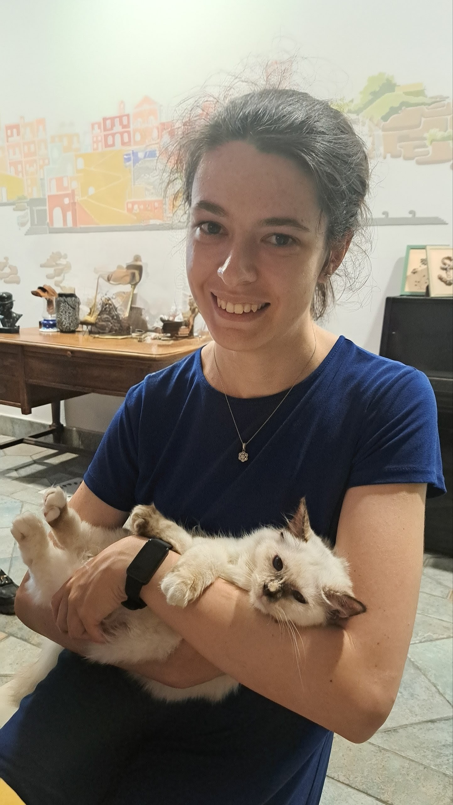

Hi! I am a PhD student in Combinatorics at the University of Warwick, under the supervision of Agelos Georgakopoulos.
My interests include graph theory and its connections with geometry and topology. My current research focus is coarse graph theory.
Previously, I studied Maths at the Scuola Normale Superiore in Pisa (Corso Ordinario, equivalent to a second-level master’s degree) and at the University of Pisa (bachelor’s and master’s degrees).
In a previous life, I worked as a systematic trading strategies developer at Goldman Sachs.
Preprints
Quasi-isometries, contractions, and intersection graphs
with Agelos Georgakopoulos
2026, preprint